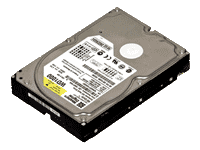

PC Building Basics
Have wished you had the know how to build your own desktop computer, media pc or server?
Have you ever had a computer break down and known what was broken but had to take it to
be repaired because you didn't know how to fix it yourself?
This web site is designed for solving exactly those two issues.
In the sections on this web site you will find a detailed description for every main component
in a personal computer.
All of the steps necessary to build a PC from individual components as well as steps to remove
and replace the damaged parts in a broken PC are listed in each components section.
The Primary components of any home computer, media pc or server are:
The Case
Every Computer will have some form of enclosure and each one is different in some ways and similar in others.

MotherBoard
All Computers have a main circuit board this is referred to as a "motherboard".
Motherboard can come in many sizes.
CPU
The CPU or central processing unit is the brain of any computer.
Every computer will have a CPU.
In the earlier days these CPU chips were soldered into the motherboard and required a lot of technical knowledge to replace them.
CPUs on modern computers are in lock into motherboards with a mechanism referred to as a socket.
Ram
Ram or Random Access Memory is the short term memory of all computers.
Commands and data are stored in Ram as requested for use by the computers CPU.

HDD
HDD or Hard Disk Drive is the storage space of your PC.
Most modern PCs will have an HDD or and SSD which is a Solid State Drive.
An SSD serves the same function as an HDD only data can be accessed much faster with an
SSD than it can be with an HDD.
An SSD uses flash memory to store data and has no mechanized parts where as an HDD uses
platters that spin up or spin down based on the systems current workload.
Video Card
Video Graphics Cards are common in most home computers.
Your computer may or may not have one.
If your computer is not set up as a Gaming PC it may instead have some form of integrated graphic
such as an APU which is both a CPU and an integrated graphics chip combined into one.
Optical Drive
Most Computers will have an optical drive such as a cd or dvd burner however your PC may not.
It is becoming more and more popular to have a PC lacking an optical drive because it uses physical media such as a dvd disk.
Almost everything you use or media you consume on your PC will be from a download or streaming
service of some kind thus the need for an optical drive is rapidly being eliminated.
PSU
A PSU or Power Supply Unit is in every computer in some form or another.
They can come in many shapes and sizes but they all serve the same function and every computer will have one.
A PSU supplies the Motherboard and all the drives such as HDDs and Optical Drives with power.
Failure of your PSU is the most common reason why a computer wont turn on or wont stay running
and thus it is one of the first things to test when you have a broken PC in many cases.